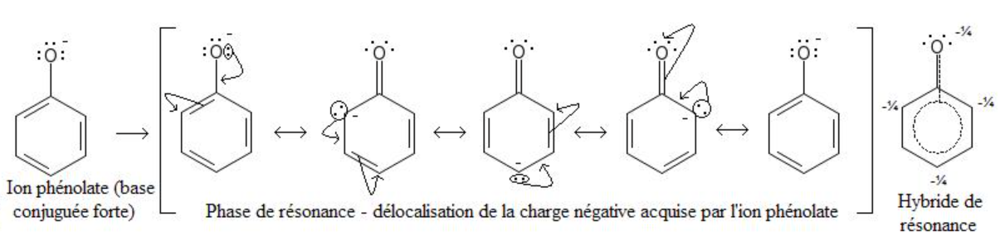

Test je kennis door je antwoord in te typen en te vergelijken met het juiste antwoord, door te klikken op de vraag.
Het streven van atomen om aan de edelgas configuratie te voldoen en zich te omringen met 8 elektronen. Het aantal ontbrekende elektronen wordt geleend bij een bindend atoom door deze te delen, dit aantal geeft het aantal bindingen.
Voor helium, He, en waterstof, H, hier geldt de deutregel: in H2 levert ieder H atoom 1 van zijn valentie elektronen. He omringt zich met 2 eigen valentie elektronen. Voor de overgangsmetalen geldt de 18 elektronen regel.
C, O, F, N, S, Li,
S
Koolstof, C, heeft 4 valentie elektronen. Door 4 covalente binding aan te gaan krijgt C een 8 omringing, bijvoorbeeld in CH4
Chloor, Cl, heeft 7 valentie elektronen. Door 1 covalente binding aan te gaan krijgt Cl een 8 omringing, bijvoorbeeld in Cl2
Met een puntje
Twee bindende elektronen door een streepje; in een dubbele binding zijn 4 elektronen betrokken bij de covalente binding dus 2 streepjes
Stap 1: N heeft 5 valentie elektronen, H 1, bij elkaar 8 elektronen. Stap 2: N octetregel, H deutregel. Stap 3: 6 elektronen (3 paren) in 3 bindingen tussen H en N. H deutregel klopt. 2 Elektronen. Stap 4: 2 niet bindende elektronen geven N 5 valentie elektronen, en maakt de structuur neutraal.
N gaat twee bindingen aan H. Voor H klopt de deutregel. N voldoet aan de octetregel, met 4 elektronen in de 2 covalente bindingen en 4 niet bindende elektronen, dat levert 6 elektronen op voor N, 1 elektron meer dan de 5 valentie elektronen van N wat een formele negatieve lading op het N atoom oplevert: [NH2]-
C gaat 4 binding aan, 1 dubbele met O, en 2x een enkele binding met O. Het dubbele gebonden O atoom heeft 2 niet bindende elektronenparen en voldoet zo aan de octetregel. De 2 enkel bindende O atomen hebben ieder 3 niet bindend elektronenparen, voldoet zo aan de octetregel, en ieder O atoom heeft hierdoor 1 elektron meer dan zijn aantal valentie elektronen en is negatief geladen.
Valence Shell Electron Pair Repulsion
2, 3, 4, 4
Lineair, gelijkzijdige driehoek, tetraëder
180, 120, 109 graden
Partiële ladingen binden een molecuul
De som van het aantal atomen dat direct aan het centrale atoom bind plus het aantal niet bindende paren
Nee. CO2 heeft een lineaire structuur, er is partiële negatieve lading in de zuurstof atomen en positieve lading in het centrale koolstof atoom, maar door de symmetrie heffen de ladingen elkaar op
Ja. SO2 heeft volgens VSEPR een gelijkzijdige driehoek structuur. Er is partiële negatieve lading in de zuurstof atomen, en positieve lading in het centrale S atoom. Door het niet bindende elektronenpaar van het S atoom, krijgt het molecuul een driehoekstructuur waardoor de negatieve ladingen elkaar niet opheffen. Zo ontstaat er een dipool
SO2 heeft een dipool. Water heeft ook een dipool, waardoor een dipoolbinding kan ontstaan tussen de twee moleculen
Het verplaatsen van elektronen binnen een molecuul zonder dat het molecuul chemisch veranderd.
Als je meerdere lewisstructuren van hetzelfde molecuul kunt tekenen is er sprake van mesomerie
Hoe meer mesomere structuren een molecuul heeft des te stabieler is de stof.
In benzeen zijn 3 dubbele en 3 enkele bindingen: de elektronen van 3 dubbele bindingen kunnen zich continu verplaatsen, waardoor de enkele bindingen dubbele worden en de eerdere dubbele enkele.
Door de dubbele binding als cirkel binnen de honingraad zeshoek structuur weer te geven
